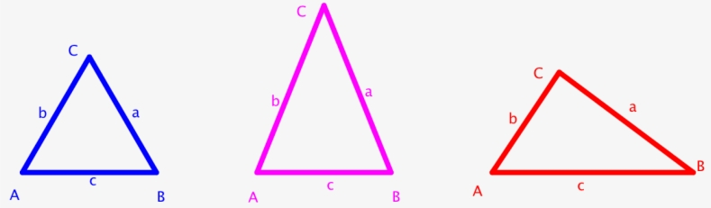

Clasificación de triángulos según sus lados
Home
Introducción
Triángulo Equilátero
Triángulo Isósceles
Triángulo Escaleno
Esta plataforma educativa, se centra en la clasificación de triángulos,
respecto a sus lados
. 